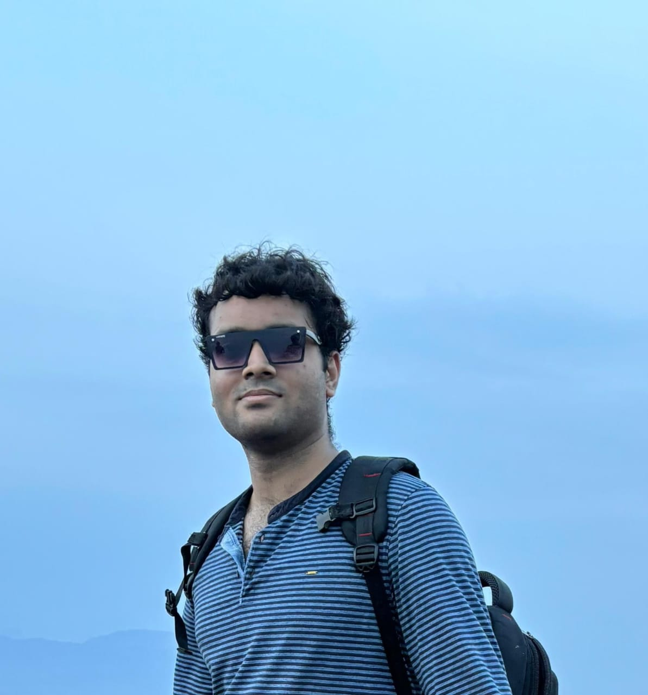

I'm an MS Computer Science student at New York University (Courant Institute) with a 4.0 GPA. I work as a research assistant to Prof. Mohamed Zahran, focusing on ML-driven program phase prediction and workload forecasting for dynamic hardware resource optimization.
Before NYU, I spent two years as a Software Engineer at JioSaavn, where I built production-scale recommendation systems, content pipelines, and RAG applications serving over 100 million users. I hold a BTech in Computer Science from IIT Ropar.
My research interests lie at the intersection of machine learning and computer systems — specifically ML for hardware resource optimization, GPU kernel engineering, and efficient model inference. I have a single-author publication in Frontiers in AI on ML for cache management.
I'll be joining Moore Capital Management as a Risk Intern this summer. I'm seeking Fall 2026 research or engineering internship opportunities in ML systems. Feel free to reach out.

| Mar 2026 | FlashAttention-2 Triton kernel implementation completed — from-scratch forward pass with online softmax, backward pass with recomputation, benchmarked up to seq length 65K. Code |
| Jan 2026 | Joined Prof. Mohamed Zahran's research group at NYU Courant, working on ML-driven program phase prediction for hardware resource optimization. |
| Jan 2026 | Built a complete Transformer LM from scratch (BPE tokenizer, RoPE, SwiGLU, AdamW) — no nn.Linear, nn.Embedding, or torch.optim. Code |
| Dec 2025 | Secured Risk Intern position at Moore Capital Management for Summer 2026. |
| Aug 2025 | Started MS in Computer Science at NYU Courant. |
| Apr 2025 | Single-author paper published in Frontiers in Artificial Intelligence: "Advancements in cache management: a review of machine learning innovations." 9+ citations. |
| Jul 2023 | Started as Software Engineer (Data Science) at JioSaavn. |
| May 2023 | Graduated with BTech in Computer Science from IIT Ropar. |
From-scratch Triton GPU kernel with online softmax and tiled computation, reducing attention memory from O(N²) to O(N). Backward pass with activation recomputation. Profiled up to 2.7B parameters with Nsight Systems.
Complete Transformer LM without nn.Linear/nn.Embedding/torch.optim — BPE tokenizer, RoPE, RMSNorm, SwiGLU, AdamW, cosine LR. Ablations across pre/post-norm, RoPE vs NoPE, SwiGLU vs SiLU.
Unified codebase for Small Language Model training with SFT, DPO/GRPO alignment on GSM8K. Mechanistic interpretability tools and KV-cache inference optimization.
Complete instruction set simulator for RISC-V (RV32I) with step-by-step execution, register inspection, and memory debugging.
Incoming summer intern in the risk division.